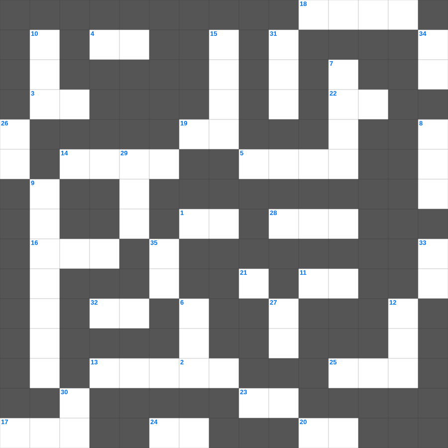

골로새서: 위의 것을 찾으라
📌 서비스 정의
십자가로세로는 교회 주보와 주일학교에서 사용할 수 있는 성경 기반 가로세로 퍼즐 서비스입니다. 성경 인물, 사건, 핵심 구절을 바탕으로 제작되었습니다. 온라인 풀이 및 인쇄 기능을 제공합니다.
오늘은 골로새서의 주요 내용을 담은 골로새서 주일학교 퀴즈를 준비했습니다. 총 35개의 힌트가 있으며, 주일학교 교재나 성경공부 자료로 활용하기 좋습니다. 무료로 즐기는 골로새서 가로세로 퍼즐을 지금 바로 풀어보세요!

📝 가로 힌트
1. 우리가 그를 사랑함은 그가 이것 우리를 사랑하셨음이라
2. 여호와 이것: 치료하시는 하나님
3. 땅 끝까지 이르러 내 이것이 되리라
4. 땅의 짐승과 기는 것(여섯째 날)
5. 기뻐하라 내가 다시 말하노니 기뻐하라
11. 예수님의 육신의 아버지
13. 성경 인물 중 가장 장수한 사람은?
14. 양의 뿔로 만든 나팔
16. 오직 의인은 믿음으로 말미암아 살리라
17. 복음을 전하는 자
18. 태초에 하나님이 세상을 만드신 일
19. 야곱이 사다리 환상을 본 곳
20. 일곱째 날에 하나님이 하신 일
22. 슬플 때 찢으며 입었던 옷
23. 동방박사들이 별을 보고 찾아와 경배한 날
24. 초대 교회에서 구제를 위해 세운 일곱 이것
25. 하나님이 시내산에서 모세에게 주신 법
28. 가룟 유다가 예수님을 넘겨준 신호
32. 예수님은 우리의 영원한 이것(길, 진리, 이것)
📝 세로 힌트
6. 너희는 여호와를 만날 만한 때에 이것하라
7. 교회는 그리스도의 몸
8. 언어가 혼잡해져 사람들이 흩어지게 된 탑
9. 그리스도의 재림과 종말에 관한 가르침
10. 열두 해를 이것증으로 앓던 여인
12. 예수님의 제자 수
15. 하나님이 우리와 함께 계시다
21. 첫째 날 하나님이 만드신 것
26. 지혜의 말씀, 지식의 말씀, 이것
27. 친구를 위하여 자기 이것을 버리면 이보다 큰 사랑이 없음
29. 죽은 지 나흘 만에 살아난 사람
30. 선한 이것은 양들을 위하여 목숨을 버리거니와
31. 예수님이 세례받으실 때 성령이 이 모양으로 내려옴
33. 엘리야가 회오리바람을 타고 간 곳
34. 불뱀에 물린 자들이 이것을 보면 살았다
35. 일곱 금 이것 사이에 계신 인자 같은 이
🧑🏫 교회 교육 자료 활용
이 퍼즐은 주일학교 교재 추천 자료로 활용할 수 있고, 주일학교 주보에 넣기 좋은 분량으로 구성되어 있습니다. 수업용 주일학교 교안에 활동지로 붙이거나, 예배 후 복습용 주일학교 공과교재로 바로 사용할 수 있습니다.
🏷️ 키워드
골로새서 주일학교 퀴즈, 골로새서, 십자가로세로, 성경퀴즈, 말씀퀴즈, 가로세로퍼즐, 주일학교 교재 추천, 주일학교 주보, 주일학교 교안, 주일학교 공과교재